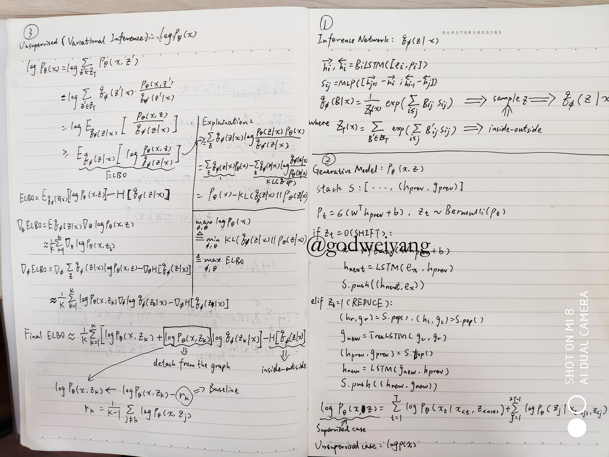
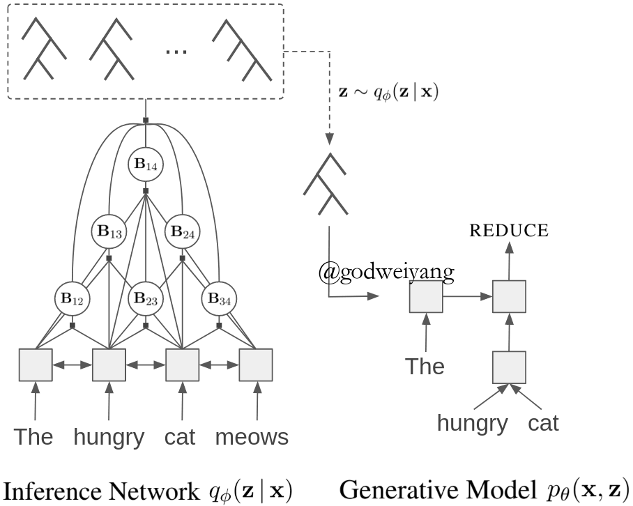
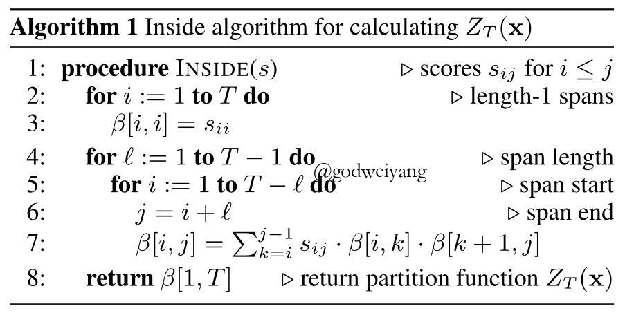
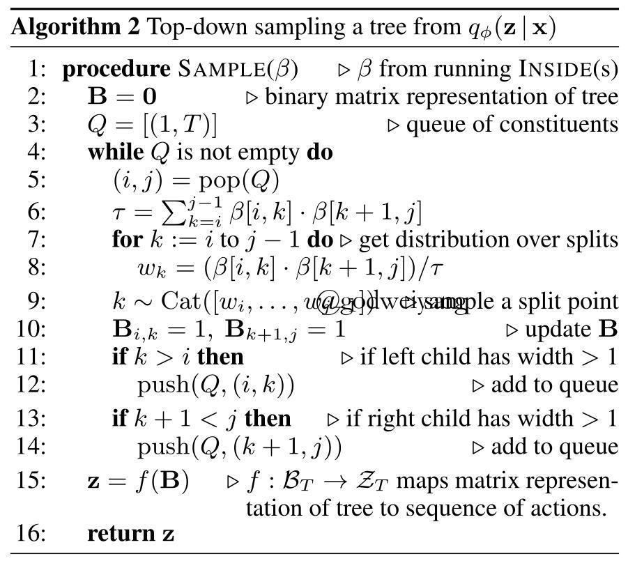
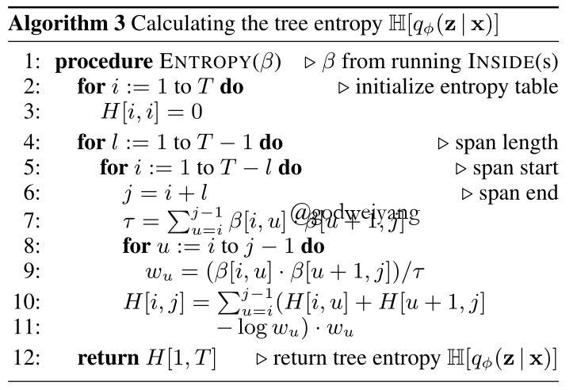
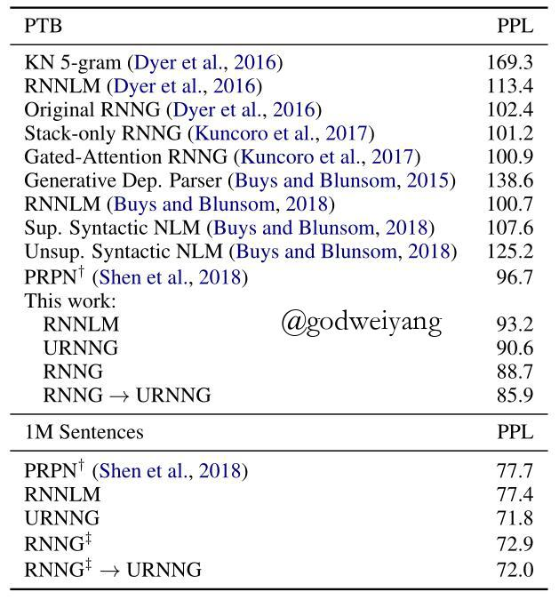
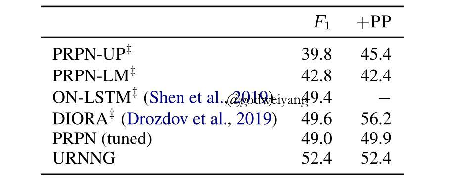

论文地址：Unsupervised Recurrent Neural Network Grammars
代码地址：github
介绍
这篇是新鲜出炉的NAACL19的关于无监督循环神经网络文法（URNNG）的论文，在语言模型和无监督成分句法分析上都取得了非常不错的结果，主要采用了变分推理和RNNG。本文公式量较大，因此我也推了好久，算法也挺多的，首先上一张我推导的公式笔记：

我这篇博客就不按照论文的顺序来讲了，就按照我上面这张笔记讲一讲我的理解吧，很多细节可能会忽略，请参见原文吧。
首先对于无监督成分句法分析，常规做法就是学习一个生成模型$p_{\theta}(x, z)$，就比如RNNG就是一个生成模型，但是缺少句法树$z$的监督信号怎么办呢？现在给你的输入只有句子$x$，那么只能用语言模型$p_{\theta}(x)$来做监督了。习惯上我们喜欢取对数，也就是：
\[
\log p_{\theta}(x) = \log \sum_z p_{\theta}(x, z)
\]
这里就存在几个问题，比如$z$的状态空间太大了，不可能穷举所有的，所以接下来按步骤讲解如何求解。
URNNG模型
先上一张模型图，让大家对整体模型有个大概的认知：

左边是一个推理网络（Inference Network），用来根据输入$x$推理出隐变量也就是句法树$z$的概率分布$q_{\phi}(z | x)$。右边是一个生成模型（Generative Model），用来计算从推理网络中采样出来的句法树$z$的联合概率$p_{\theta}(x, z)$，最后根据上面语言模型算出句子的概率，最大化这个概率即可。
接下来分别讲解这两个部分和具体的优化方法。
Inference Network $q_{\phi}(z | x)$
首先将词向量$e_i$和位置向量$p_i$拼接，作为推理网络LSTM的输入：
\[
f_i, b_i = {\rm BiLSTM}([e_i, p_i])
\]
然后算出span $(i, j)$的得分，计算方式和以往一样，用BiLSTM前后向输出做差，然后通过一个前馈神经网络得到分数：
\[
s_{ij} = {\rm MLP}([f_{j+1} - f_i; b_{i-1} - b_j])
\]
接下来就需要计算句法树的概率分布了，这里不直接计算句法树$z$，而是计算它的邻接矩阵$B$的概率分布，这个邻接矩阵意思就是如果span $(i, j)$存在，那么$B_{ij} = 1$，否则的话$B_{ij} = 0$。然后就可以用CRF计算出邻接矩阵$B$对应的概率：
\[
q_{\phi}(B | x) = \frac{1}{Z_T(x)}\exp(\sum_{i \le j} B_{ij}s_{ij})
\]
其中$Z_T(x)$是配分函数，也就是用来将概率归约到0到1之间的：
\[
Z_T(x) = \sum_{B’ \in \mathcal B_T} \exp(\sum_{i \le j} B’_{ij}s_{ij})
\]
注意这里的$\mathcal B_T$并不是所有的01矩阵集合，而是必须满足能产生合法句法树的矩阵，而这情况也很多，不能穷举求解，在这里采用经典的inside算法来求解这个配分函数：

不过我觉得这里是错的！就是这里的两处$s_{ij}$应该改成$\exp(s_{ij})$。不过具体代码实现的时候并没有这么做，初始值一样都是$\beta[i,i]=s_{ii}$，但是递推的时候采用了如下式子：
\[
\beta[i, j] = \log\sum_{k=i}^{j-1}\exp(s_{ij}+\beta[i,k]+\beta[k+1,j])
\]
其实就是用$e^{\beta}$来取代$\beta$了，化简后就是代码实现这个式子，应该是为了防止数值溢出。
然后就是采样了，推理网络目的就是计算出句法树的概率分布，然后根据这个分布采样出若干个句法树，那么现在给定一棵句法树可以根据上面的算法计算出它的概率了，那怎么采样呢？其实还是可以通过刚刚计算得出的$\beta$数组来采样，采样算法如下:

其实就是自顶向下的根据概率分布来采样每个span的split，用一个队列来保存所有还没有采样出split的span，然后把所有采样出的span在邻接矩阵中的对应值标为1。
最后推理网络采样出了若干个句法树$z$，然后根据CRF计算出每个句法树的概率$q_{\phi}(z | x)$，后面的事情就交给生成网络了。
Generative Model $p_{\theta}(x, z)$
上面的推理网络采样出了若干个句法树$z$，生成网络的目的就是计算它的联合概率$p_{\theta}(x, z)$。这个其实不难，在之前的RNNG论文笔记中，我已经大致讲过了，可以去复习一下：Recurrent Neural Network Grammars，这里稍稍做了一些改进。
首先需要定义一个栈用来存放转移的历史状态，这里定义栈里放的元素为二元组$(h, g)$，一个是stack-LSTM编码的输出，一个是子树的结构表示。首先需要预测下一步的action是什么，所以取出栈顶的元素$(h_{prev}, g_{prev})$，预测action的时候只要用到隐含层输出：
\[
p_t = \sigma(w^T h_{prev} + b)
\]
然后根据这个概率预测action是SHIFT还是REDUCE，下面分两种情况讨论。
如果是SHIFT，那么因为是生成模型，所以需要预测下一个移进的单词是什么：
\[
x \sim softmax(Wh_{prev} + b)
\]
然后将单词$x$的词向量输入到stack-LSTM中得到下一个时刻的隐含层输出：
\[
h_{next} = {\rm LSTM}(e_x, h_{prev})
\]
最后将$(h_{next}, e_x)$推进栈里。
如果是REDUCE，那么首先需要取出栈顶的两个元素$(h_r, g_r)$和$(h_l, g_l)$，然后用TreeLSTM计算出两个子结点合并后的子树的表示：
\[
g_{new} = {\rm TreeLSTM}(g_l, g_r)
\]
接着还是计算stack-LSTM下一个时刻的隐含层输出：
\[
h_{new} = {\rm LSTM}(g_{new}, h_{prev})
\]
最后将$(h_{new}, g_{new})$推进栈里。
为了防止数值溢出，常规上我们计算联合概率的对数：
\[
\log p_{\theta}(x, z) = \sum_{t=1}^T \log p_{\theta}(x_t | x_{< t}, z_{< n(t)}) + \sum_{j=1}^{2T-1} \log p_{\theta}(z_j | x_{< m(j)}, z_{< j})
\]
从这个式子可以看出，联合概率定义为所有给定某段单词和action预测下一个单词和给定某段单词和action预测下一个action的概率之积。
如果是监督任务比如RNNG，那么只需要最大化这个联合概率就足够了，但是现在要做无监督，没有$z$，注意别搞混了，推理网络采样出的$z$可不能用来监督哦，因为那本来就不是正确的，所以接下来要采用语言模型来作为最终的目标函数。
Variational Inference
句子$x$的对数概率定义为：
\[
\log p_{\theta}(x) = \log \sum_{z \in {\mathcal Z}_T} {p_{\theta}(x, z)}
\]
其中${\mathcal Z}_T$是所有合法句法树的集合，但是这里不可能穷举所有的句法树，所以就要用到变分推理，具体的理论知识不仔细介绍了，可以去查阅变分推理相关知识，下面直接推导。
\[
\begin{array}{l}\log {p_\theta }(x) = \log \sum\limits_{z \in {\mathcal{Z}_T}} { {p_\theta }(x,z)} \\ = \log\sum\limits_{z \in {\mathcal{Z}_T}} { {q_\phi }(z|x)\frac{ { {p_\theta }(x,z)}}{ { {q_\phi }(z|x)}}} \\ = \log { {\mathbb E}_{ {q_\phi }(z|x)}}\left[ {\frac{ { {p_\theta }(x,z)}}{ { {q_\phi }(z|x)}}} \right]\\ \ge { {\mathbb E}_{ {q_\phi }(z|x)}}\left[ {\log \frac{ { {p_\theta }(x,z)}}{ { {q_\phi }(z|x)}}} \right]\end{array}
\]
其中最后一行叫做先验$\log p_{\theta}(x)$的证据下界（ELBO），要想最大化先验，可以最大化这个ELBO，如果我们对这个ELBO变化一下形式可以得到：
\[
\begin{array}{l}{\rm ELBO} = { {\mathbb E}_{ {q_\phi }(z|x)}}\left[ {\log \frac{ { {p_\theta }(x,z)}}{ { {q_\phi }(z|x)}}} \right]\\ = { {\mathbb E}_{ {q_\phi }(z|x)}}\left[ {\log \frac{ { {p_\theta }(z|x){p_\theta }(x)}}{ { {q_\phi }(z|x)}}} \right]\\ = { {\mathbb E}_{ {q_\phi }(z|x)}}\left[ {\log {p_\theta }(x)} \right] - { {\mathbb E}_{ {q_\phi }(z|x)}}\left[ {\log \frac{ { {q_\phi }(z|x)}}{ { {p_\theta }(z|x)}}} \right]\\ = \log {p_\theta }(x) - {\rm KL}({q_\phi }(z|x)\parallel {p_\theta }(z|x))\end{array}
\]
所以这个ELBO和先验就相差了一个KL散度，最大化ELBO的话等价于最小化KL散度，也就是使推理网络产生句法树的概率分布和生成模型尽量接近。
但是这个ELBO还是不好算，尽管它把$\log$移到了求和符号也就是期望里面，所以转换一下形式：
\[
{\rm ELBO} = {\mathbb E}_{q_{\phi}(z|x)}\left[ \log p_{\theta}(x,z) \right] - {\mathbb H} \left[ q_{\phi}(z|x) \right]
\]
因为模型一共有两组参数，一个是推理网络的参数$\phi$，一个是生成网络的参数$\theta$，所以下面分别对两个参数求导。
首先对$\theta$求偏导，因为只有第一项有这个参数，所以偏导为：
\[
\nabla_{\theta}{\rm ELBO} = {\mathbb E}_{q_{\phi}(z|x)}\left[ \nabla_{\theta} \log p_{\theta}(x,z) \right]
\]
这个偏导可以按照概率$q_{\phi}(z|x)$采样得到：
\[
\nabla_{\theta}{\rm ELBO} \approx \frac{1}{K}\sum_{k=1}^{K} {\nabla_{\theta} \log p_{\theta}(x,z_k)}
\]
然后对$\phi$求偏导，因为有两项含有这个参数，分别求偏导。第二项是熵，它的值其实可以用之前的$\beta$数组算出来，算法如下：

然后偏导可以交给深度学习库的自动微分，就不用你自己求啦。
至于第一项的偏导可以用类似于策略梯度的方法解决：
\[
\begin{array}{l}{\nabla _\phi }{\mathbb{E}_{ {q_\phi }(z|x)}}\left[ {\log {p_\theta }(x,z)} \right]\\ = {\nabla _\phi }\sum\limits_z { {q_\phi }(z|x)\log {p_\theta }(x,z)} \\ = \sum\limits_z {\log {p_\theta }(x,z){\nabla _\phi }{q_\phi }(z|x)} \\ = \sum\limits_z { {q_\phi }(z|x)\log {p_\theta }(x,z){\nabla _\phi }\log {q_\phi }(z|x)} \\ = {\mathbb{E}_{ {q_\phi }(z|x)}}\left[ {\log {p_\theta }(x,z){\nabla _\phi }\log {q_\phi }(z|x)} \right]\\ \approx \frac{1}{K}\sum\limits_{k = 1}^K {\log {p_\theta }(x,{z_k}){\nabla _\phi }\log {q_\phi }({z_k}|x)} \end{array}
\]
这里最后也是转化为了采样，和策略梯度做法类似，这里加入baseline来提升性能：
\[
\begin{array}{l}{\nabla _\phi }{\mathbb{E}_{ {q_\phi }(z|x)}}\left[ {\log {p_\theta }(x,z)} \right]\\ \approx \frac{1}{K}\sum\limits_{k = 1}^K {\log {p_\theta }(x,{z_k}){\nabla _\phi }\log {q_\phi }({z_k}|x)} \\ \approx \frac{1}{K}\sum\limits_{k = 1}^K {(\log {p_\theta }(x,{z_k}) - {r_k}){\nabla _\phi }\log {q_\phi }({z_k}|x)} \end{array}
\]
其中$r_k$定义为所有其他的对数联合概率的均值：
\[
r_k = \frac{1}{K-1} \sum_{j \ne k} \log p_{\theta}(x, z_j)
\]
至此所有偏导都已求出来了，两个通过采样得到，一个通过inside算法结果自动微分得到，所以去掉导数符号并相加就得到了最终的损失函数：
\[
{\mathcal L}(\phi, \theta) \approx \frac{1}{K} \sum_{k=1}^K {\left[ \log p_{\theta}(x, z_k) + (\log p_{\theta}(x, z_k) - r_k)\log q_{\phi}(z_k|x) \right]} - {\mathbb H}\left[ q_{\phi}(z|x) \right]
\]
一定要注意，这里的$\log p_{\theta}(x, z_k) - r_k$在代码实现的时候不能传入梯度，不然的话对$\theta$的偏导就会多出这一项的偏导了！
实验
实验结果这里就不多说了，细节具体看论文吧，就贴两个结果，一个是语言模型：

可以看出在标准的PTB数据集上，URNNG效果只比监督学习的RNNG和用URNNG损失函数微调后的RNNG效果略差一点，但是在大数据集上，URNNG的优势就体现出来了。
另一个是无监督成分句法分析，这里是用的全部长度的测试集：

这个任务上URNNG效果是最好的。
结论
和之前两篇语言模型做无监督成分句法分析类似，这篇论文用推理网络学习句法树的概率分布并采样句法树，再用生成网络计算这些句法树和句子的联合概率，最后用变分推理最大化句子的概率，也就是学习出一个好的语言模型。
这篇论文的工作还是挺令人惊叹的，融合了inside算法、RNNG、变分推理等等知识。本来我变分推理听老师讲了好几次了都云里雾里的，看了这篇论文后总算弄懂了一点了，不过所了解的还是很少，EM算法、VAE之类的高级境界根本不会。。。